Getting to know your Java programming
environment

The goal of this hands-on lab is to get you exposed to the Java
programming environment for the first time in which you will build your
first HelloWorld Java program both using command line tools (javac
compiler and java command) and using NetBeans.
Expected duration: 60 minutes
Prerequisites
This hands-on lab assumes you have no or minimum programming
experience.
Software
Needed
Before you begin, you need to install the following software on your
computer.
- Java Standard Development Kit (JDK™) version
6.0 update x (download)
- If you already have installed JDK 5.0 or JDK 6.0, you
can skip this.
- NetBeans 6.5, 6.5.1, 6.7, or 6.8 (download)
- When you install NetBeans IDE, it will ask you which JDK
you want to use.
Change Log
- Jan. 19th, 2007: Created
- Jan. 21st, 2007: JDK 6 installation is explained in more detail
- June 8th, 2008: NetBeans 6.1 information is added
- Jan. 10th, 2009: NetBeans 6.5 is used
- Aug. 1st, 2009: Exercise 1 and 2 are switched. NetBeans exercise
is now exercise 1.
Lab Exercises
Exercise 0: Install Java SE
and NetBeans IDE
(0.1)
Download and
install JDK 6
on you computer
If you have installed any JDK 6 Update x on your computer, you can
skip this step.
1. Download JDK 6.
- From your browser, go to download
page of the Java SE.
- Observe that there are multiple choices.
- You can choose any of these but for the sake of this exercise, choose JDK 6 Update x as show in in
Figure-0.10 below. (The latest version as of August 1st, 2009 is
version 14.)
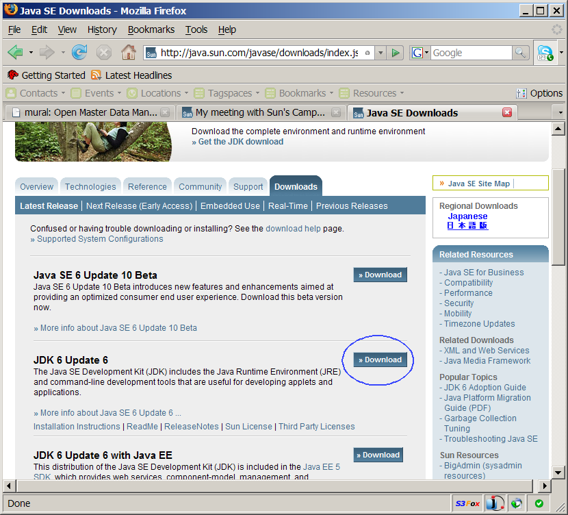
Figure-0.10: Choose JDK 6 Update x
- Select the Platform of your choice from the drop-down menu.
- Check the checkbox of "I agree to the Java SE Development
Kit 6 License Agreement".
- Click Continue.
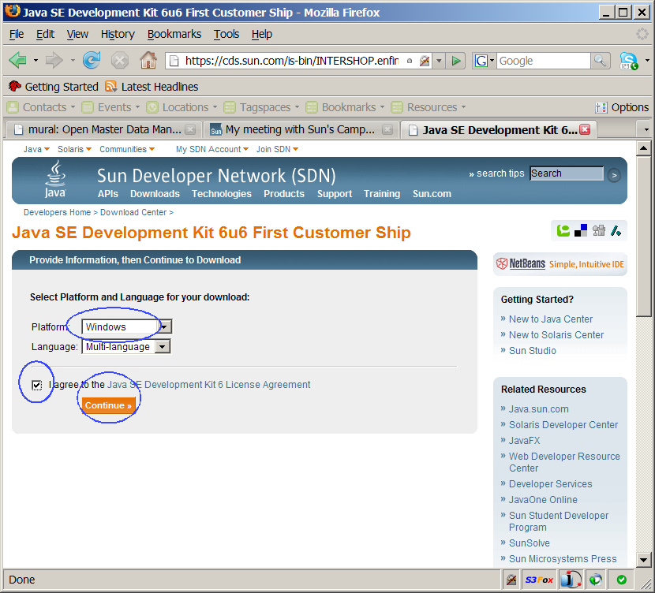
- Choose OS platform specific off-line installation, Windows Offline Installation for the
Windows platform, for example.
- Click the link of jdk-6u6-windows-i586-p.exe
(or click Download Selected with Sun Download Manager.)
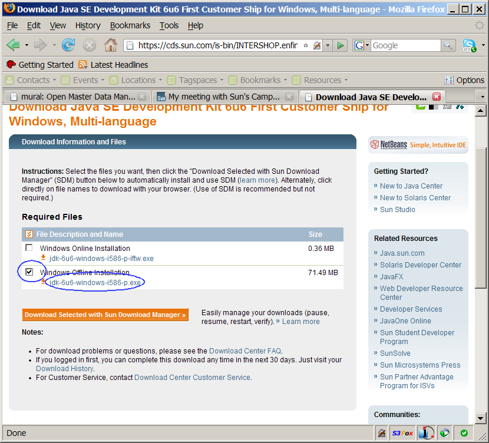
Figure-0.11: Choose the file
2. Install JDK 6
- Double-click jdk-6u6-windows-i586-p.exe
(for Windows) to run the installation. (Other platforms, of course, has
different names.)
- Observe that the installation gets started.
- When License agreement
dialog box is displayed, click I
accept the terms in the license agreement. (Figure-0.12 below)
- Click Next.
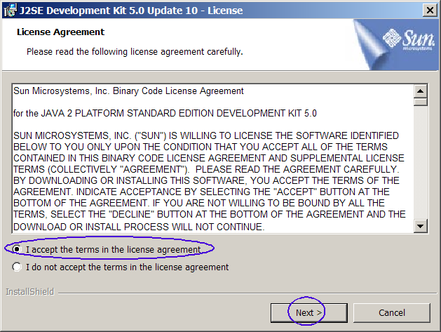
Figure-0.12: License Agreement
- Observe that J2SE Development
Kit 5.0 Update x - Custom Setup dialog box appears.
- If you want to install it in a different location, click Change and specify the directory of
your choice.
- Click Next. (Figure-0.13
below)
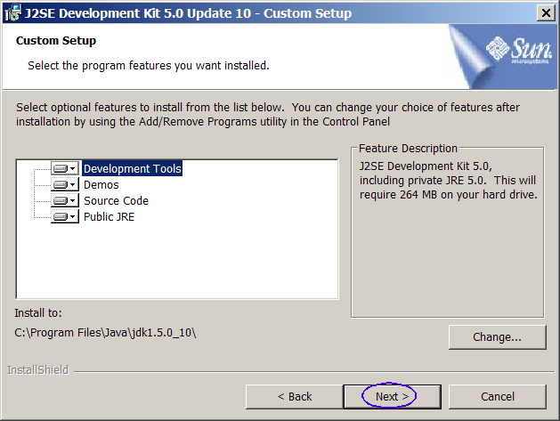
Figure-0.13: Specify the installation location
- Observe that the installation process of the J2SE Development Kit
gets underway for a minute or two.
- Observe that J2SE Runtime
Environment 5.0 Update x - Custom Setup dialog box appears.
(Figure-0.14 below)
- Click Next. (Figure-0.14
below)
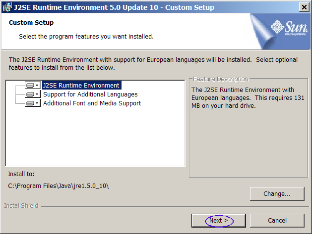
Figure-0.14: Custom Setup of the J2SE Runtime Environment
- Observe that Browser Registration dialog box appears.
- Click Next.
(Figure-0.15 below)
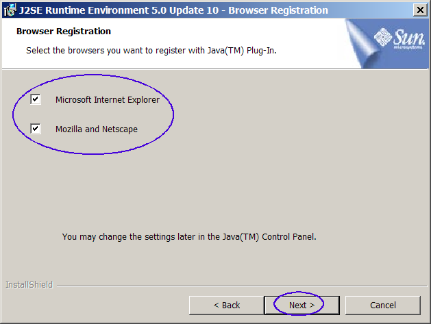
Figure-0.15: Browser registration
- Observe that the installation process of the J2SE Runtime
Environment gets underway.
- Observe that Installation Completed screen appears.
(0.2)
Download and
install NetBeans IDE on your computer
1. From your browser, go to
download
page of the NetBeans IDE.
2. Select OS specific version of the NetBeans IDE from the drop-down
menu.
3. Download and install any bundle that contains Java SE. There
are 4 possible choices. You can choose to download any one of the
4
choices. The current version of NetBeans is 6.8.
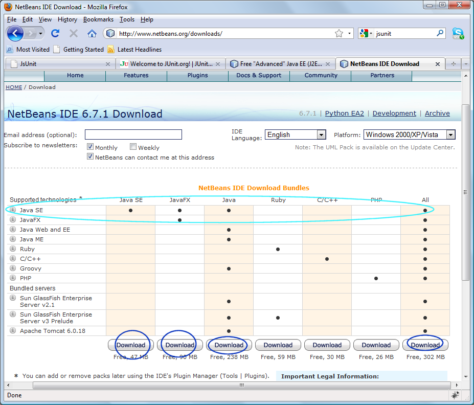
Figure-1.11: Download NetBeans IDE 6.5
Exercise 1: Write, compile, and run Hello
Java program using NetBeans IDE
In this exercise, you are going to build
a simple Hello application using NetBeans
IDE.
- Start NetBeand IDE
- Create a NetBeans project
- Build and run the program
(1.1)
Start NetBeans IDE
1. Double-click NetBeans IDE Icon on the
desktop to start the NetBeans IDE.
Observe the NetBeans IDE gets started. (Figure-2.10 below)
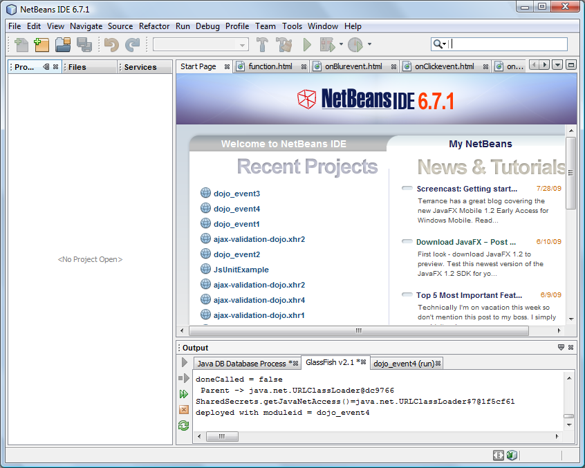
Figure-2.10: NetBeans IDE
(1.2)
Create a NetBeans
project
1. Select File from top-level menu and
select New Project or press Ctrl+Shift+N.
(Figure-2.20 below)
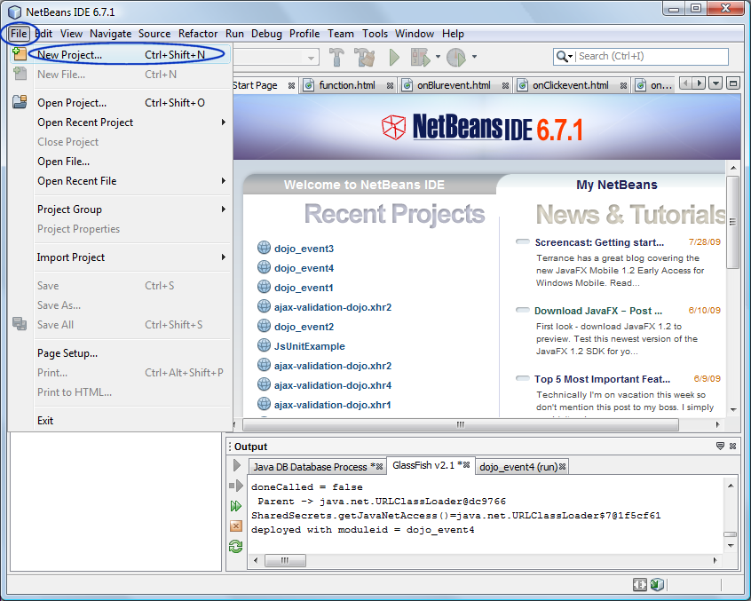
Figure-2.20: Create New Project
2. Observe that the New Project dialog box appears.
3. Select Java under Categories section and Java Application under Projects section. (Figure-2.21
below)
4. Click Next.
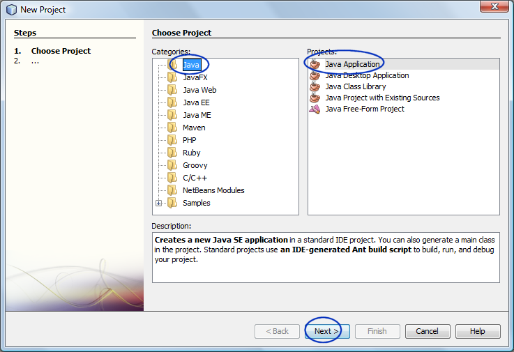
Figure-2.21: Create Java Application project
5. Under Name
and Location pane, for the Project
Name field, enter MyHelloProject.
6. For the Create Main Class
field, enter Hello.
(Figure-2.22 below) For Project
Location field, which indicates the directory in which you are
creating a NetBeans project, you can leave it as it is.
7. Click Finish.
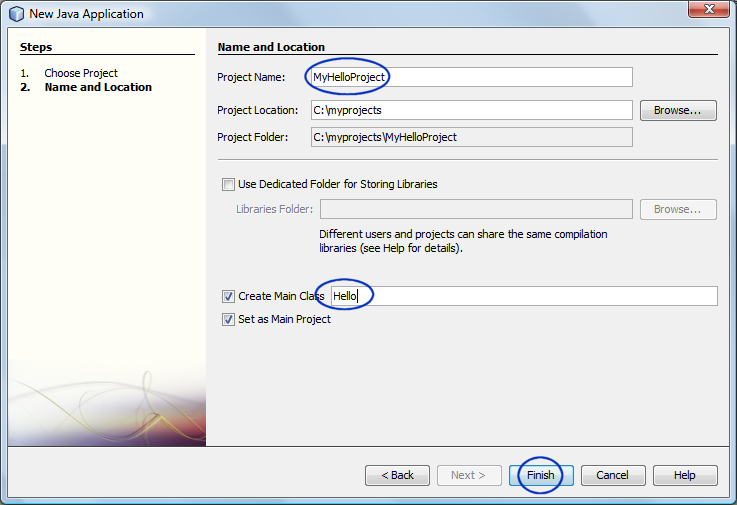
Figure-2.22: Give a project name
8. Observe that the MyHelloProject node is created
under Projects pane of the
NetBeans IDE.
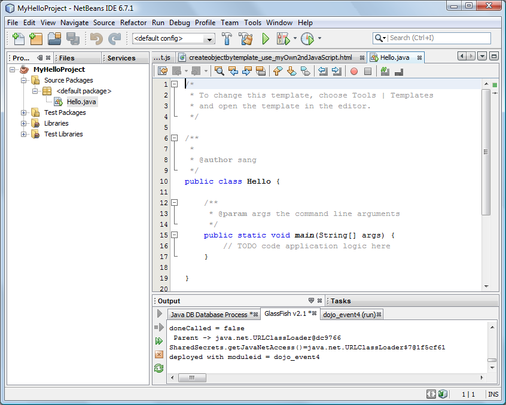
9. Modify the IDE generated Hello.java as
shown in Figure-2.23 below. The code fragment that you want to
add is highlighted in bold and red-colored
font.
public class Hello {
/**
* @param args the command line arguments
*/
public static void main(String[] args) {
// TODO code application
logic here
System.out.println("This
is my first Java program!");
}
}
|
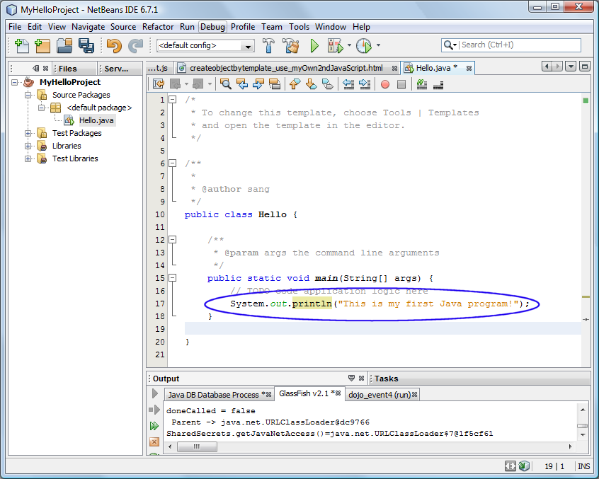
Figure-2.23: Modified Hello.java
10. Introduce a syntax error in the
program and observe that NetBeans IDE immediately highlights the
problem as shown in Figure-2.24 below. It detects that the
keyword void is misspelled as
voidx.
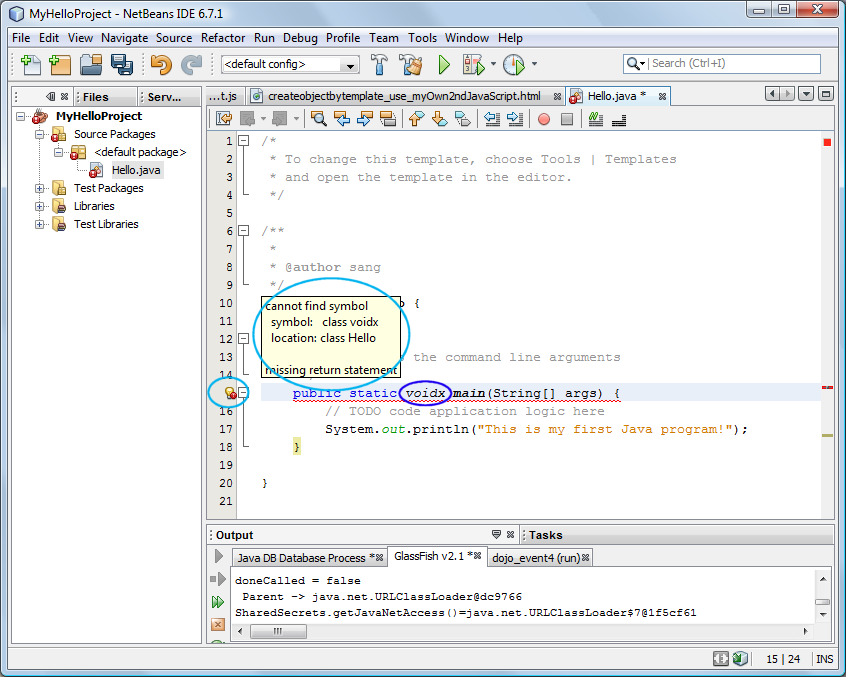
Figure-2.24: NetBeans IDE detects a syntax error (compile error)
11. Remove the syntax error.
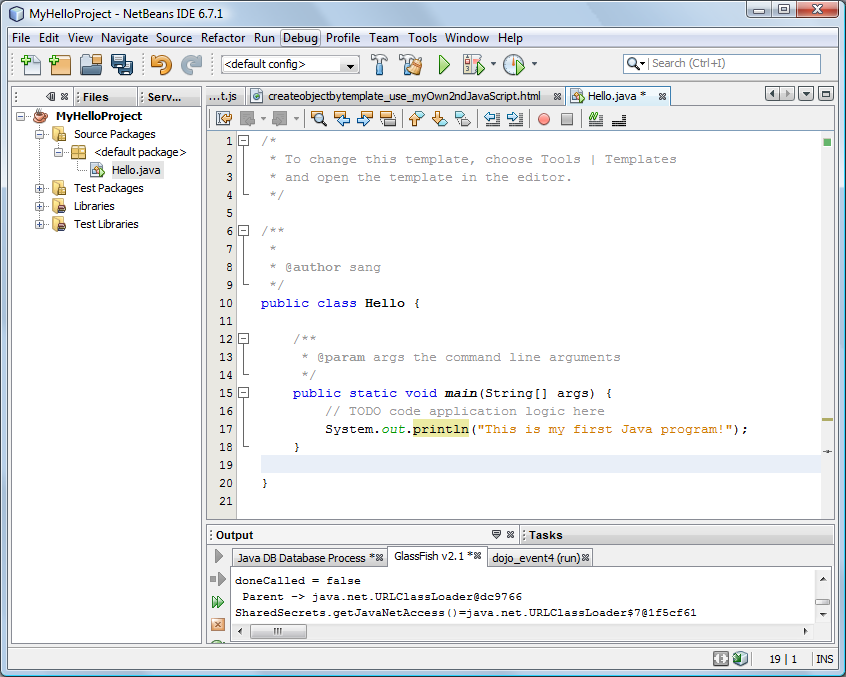
return to top of exercise
(1.3)
Build and run the program
1. Right click MyHelloProject and select Run. (Figure-2.30 below)
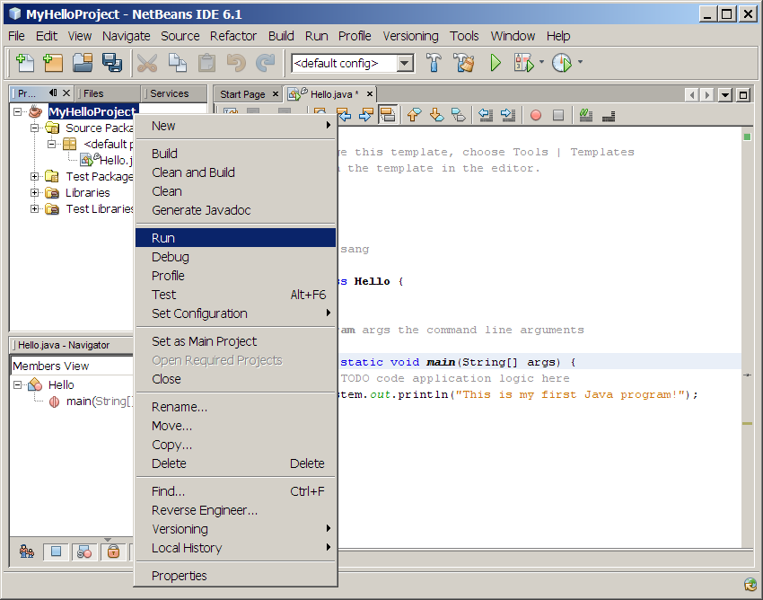
Figure-2.30: Build and run the project
2. Observe that the Hello.java is
compiled and then run. (Figure-2.31 below)
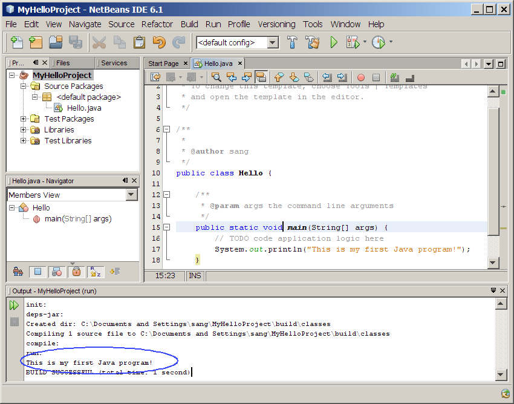
Figure-2.31: Result of running the MyHelloProject
return to top of exercise
Summary
In this exercise, you have built
and run Hello Java application using NetBeans IDE.
return to the top
Exercise 2: Write, compile, and run Hello
Java program using command line tool
The goal of this exercise is to let you experience a complete
development cycle - writing, compiling, and running a
simplest possible Java program - using command line tools. If you
have
done any programming in the past using different programming languages
such as C or C++, this is not that much different from it. (There is a
slight difference, however. In Java, the compiler which is called
javac compiles
the Java source code into what is called bytecode which can be run on
any Java compliant platform, thus provides the portability of the Java
programs. The bytecode is the same thing as Java class file, which is
represented by *.class file notation.)
(2.1)
Build and run Hello Java program using "javac" compiler and "java"
1. Create a directory where you are going
to
write Java programs
C:\>mkdir
c:\myjavaprograms
C:\>cd \myjavaprograms
2. Write Hello.java
using
your editor of choice such as notepad
on Windows platform, gedit on
Solaris platform or cross-platform Java editor called jedit (in this example, I am
using notepad) as shown in
Code-1.10
below. You can cut and paste
the code from the Code-1.10 but I encourage you to write the
code
line by line yourself manually just to experience some compile errors.
C:\myjavaprograms>noteepad
Hello.java
public class Hello {
/**
* My first Java program
*/
public static void main( String[] args ){
// Print the string "Hello
world" on screen
System.out.println("Hello
world");
}
} |
Code-1.10: Hello.java
3. Compile
Hello.java using
javac
compiler. The
javac compiler
comes with J2SE SDK you've download. It resides in
%JAVA_HOME%\bin (Windows) or
$JAVA_HOME/bin (Solaris/Linux)
directory. The result of compilation will be the creation of
Hello.class file.
C:\myjavaprograms>javac
Hello.java
 Trouble-shooting #1
Trouble-shooting #1: If you
experience the following error condition, it means the %JAVA_HOME%\bin
for Windows platform or $JAVA_HOME/bin for Solaris/Linux platform is
not set in your path. You can try C:\Program
Files\Java\jdk1.6.0_06\bin\javac Hello.java (for Windows) if you want
to proceed without setting the path.
C:\myjavaprograms>javac Hello.java
'javac' is not recognized as an internal
or external command, operable program or batch file
Solution #a: Add
C:\"Program
Files"\Java\jdk1.6.0_14\bin (for Windows platform) or
/usr/opt/jdk1.6.0_14/bin (for
Solaris/Linux platform) to the path environment variable.
Solution #b: You can
specify the full path as following:
C:\myjavaprograms>C:\"Program
Files"\Java\jdk1.6.0_14\bin\javac Hello.java
4. Make sure
Hello.class file
has been created. The
Hello.class
file contains bytecode representation of the Hello class.
C:\myjavaprograms>dir Hello.class
Volume in drive C is ACER
Volume Serial Number is 58CE-B0DC
Directory of C:\myjavaprograms
01/19/2007 12:16
AM
415 Hello.class
1
File(s)
415 bytes
0 Dir(s) 21,578,907,648 bytes free
6. Run the
Hello program
using
java command.
The
java command starts the
Java Virtual Machine and runs the
Hello
program in this example. A Java program can be made of multiple
Java classes and and a set of libraries. In this example, the
Hello program just contains a single class called
Hello.class. You can
regard the
java command as
Java interpreter.
C:\myjavaprograms>java
Hello
Hello world
Trouble-shooting #2: If you
experience the following error condition, it is highly likely you
compiled the program with JDK 1.4 and then run it with JDK 6.
C:\myjavaprograms>java Hello
Exception in thread "main" java.lang.UnsupportedClassVersionError:
Hello (Unsupported major.minor version 49.0)
Solution: Add
C:\"Program
Files"\Java\jdk1.6.0_14\bin (for Windows platform) or
/usr/opt/jdk1.6.0_14/bin (for
Solaris/Linux platform) to the front of the path environment variable.
Trouble-shooting #3: If you
experience the following error condition, it is highly likely because
your have set CLASSPATH enviroment variable set without the current
directory.
C:\myjavaprograms>java Hello
Exception in thread "main" java.lang.NoClassDefFoundError: Hello
Solution: Try "java
-classpath . Hello" (There is a dot . after -classpath) as following.
We will learn about classpath later on.
C:\myjavaprograms>java -classpath .
Hello
This is my first Java program!
7. Modify
Hello.java as shown
in Code-1.11 below. The code
fragment
that needs to be changed are highlighted in bold and blue-colored font.
public class Hello {
/**
* My first Java program
*/
public static void main( String[] args ){
// Print the string "Hello
world" on screen
System.out.println("This is my first
Java program!");
}
}
|
Code-1.11: Modified Hello.java
8. Compile and run the program. Observe that new message is displayed.
C:\myjavaprograms>javac Hello.java
C:\myjavaprograms>java Hello
This is my first Java program!
return to top of
the exercise
(2.2)
Experiment with "javac" compiler
In this step, you are going to learn how
to use various command line options of the javac compiler.
1. Display the usage information of the javac compiler by using -help option
C:\myjavaprograms>javac -help
Usage: javac <options> <source files>
where possible options include:
-g
Generate all debugging info
-g:none
Generate no debugging info
-g:{lines,vars,source} Generate only
some debugging info
-nowarn
Generate no warnings
-verbose
Output messages about what the compiler is doing
-deprecation
Output source locations where deprecated APIs are used
-classpath
<path>
Specify where to find user class files
-cp
<path>
Specify where to find user class files
-sourcepath
<path> Specify
where to find input source files
-bootclasspath <path>
Override location of bootstrap class files
-extdirs
<dirs>
Override location of installed extensions
-endorseddirs <dirs>
Override location of endorsed standards path
-d
<directory>
Specify where to place generated class files
-encoding <encoding>
Specify character encoding used by source files
-source
<release>
Provide source compatibility with specified release
-target
<release>
Generate class files for specific VM version
-version
Version information
-help
Print a synopsis of standard options
-X
Print a synopsis of nonstandard options
-J<flag>
Pass <flag> directly to the runtime system
2. Run the javac compiler with -verbose option
C:\myjavaprograms>javac -verbose Hello.java
[parsing started Hello.java]
[parsing completed 516ms]
[search path for source files: [.]]
[search path for class files: [C:\Program
Files\Java\jdk1.6.0_06\jre\lib\rt.jar,C:\Program
Files\Java\jdk1.6.0_06\jre\lib\jsse.jar, C:\Program
Files\Java\jdk1.6.0_06\jre\lib\jce.jar, C:\Program
Files\Java\jdk1.6.0_06\jre\lib\charsets.jar,C:\Program
Files\Java\jdk1.6.0_06\jre\lib\ext\dnsns.jar, C:\Program
Files\Java\jdk1.6.0_06\jre\lib\ext\localedata.jar, C:\Program
Files\Java\jdk1.6.0_06\jre\lib\ext\sunjce_provider.jar, C:\Program
Files\Java\jdk1.6.0_06\jre\lib\ext\sunpkcs11.jar, .]]
[loading C:\Program
Files\Java\jdk1.6.0_06\jre\lib\rt.jar(java/lang/Object.class)]
[loading C:\Program
Files\Java\jdk1.6.0_06\jre\lib\rt.jar(java/lang/String.class)]
[checking Hello]
[loading C:\Program
Files\Java\jdk1.6.0_06\jre\lib\rt.jar(java/lang/System.class)]
[loading C:\Program
Files\Java\jdk1.6.0_06\jre\lib\rt.jar(java/io/PrintStream.class)]
[loading C:\Program
Files\Java\jdk1.6.0_06\jre\lib\rt.jar(java/io/FilterOutputStream.class)]
[loading C:\Program
Files\Java\jdk1.6.0_06\jre\lib\rt.jar(java/io/OutputStream.class)]
[wrote Hello.class]
[total 1141ms]
3. Experience the compile error.
- Modify Hello.java as shown in Code 1-20 below. The code fragment
that needs to be changed is highlighted in bold and blue-colored font.
The change introduced a syntax error - the keyword static is mistyped with statict.
public class Hello {
/**
* My first Java program
*/
public statict void
main( String[] args ){
// Print the string "Hello
world" on screen
System.out.println("This is my first
Java program!");
}
} |
Code-1.20: Code that contains syntax error
- Compile Hello.java with javac.
- Observe the errors
C:\myjavaprograms>javac Hello.java
Hello.java:6: <identifier> expected
public statict void main( String[] args ){
^
Hello.java:12: ';' expected
}
^
2 errors
- Remove the syntax error you introduced to the code and recomile
it.
return
to top of
the exercise
(2.3)
Experiment with "java" command
In this step, hyou are going to learn how
to use various command line options of the java command. You can
think of java command as Java Virtual machine.
1. Display the usage information of the java command with -help option or -? option.
C:\myjavaprograms>java -help
Usage: java [-options] class [args...]
(to
execute a class)
or java [-options] -jar jarfile [args...]
(to
execute a jar file)
where options include:
-client to
select the "client" VM
-server to
select the "server" VM
-hotspot is a synonym
for the "client" VM [deprecated]
The default VM is client.
-cp <class search path of directories and zip/jar
files>
-classpath <class search path of directories and
zip/jar files>
A ; separated list of directories, JAR archives,
and ZIP archives to search for class files.
-D<name>=<value>
set a system property
-verbose[:class|gc|jni]
enable verbose output
-version print product
version and exit
-version:<value>
require the specified version to run
-showversion print product version and continue
-jre-restrict-search | -jre-no-restrict-search
include/exclude user private JREs in the version search
-? -help print this
help message
-X
print help on non-standard options
-ea[:<packagename>...|:<classname>]
-enableassertions[:<packagename>...|:<classname>]
enable assertions
-da[:<packagename>...|:<classname>]
-disableassertions[:<packagename>...|:<classname>]
disable assertions
-esa | -enablesystemassertions
enable system assertions
-dsa | -disablesystemassertions
disable system assertions
-agentlib:<libname>[=<options>]
load native agent library <libname>, e.g. -agentlib:hprof
see also, -agentlib:jdwp=help and -agentlib:hprof=help
-agentpath:<pathname>[=<options>]
load native agent library by full pathname
-javaagent:<jarpath>[=<options>]
load Java programming language agent, see java.lang.instrument
-splash:<imagepath>
show splash screen with specified image
2. Run the java command with -verbose option
C:\myjavaprograms>java -verbose Hello
[Opened C:\Program Files\Java\jre1.5.0_06\lib\rt.jar]
[Opened C:\Program Files\Java\jre1.5.0_06\lib\jsse.jar]
[Opened C:\Program Files\Java\jre1.5.0_06\lib\jce.jar]
[Opened C:\Program Files\Java\jre1.5.0_06\lib\charsets.jar]
[Loaded java.lang.Object from shared objects file]
[Loaded java.io.Serializable from shared objects file]
[Loaded java.lang.Comparable from shared objects file]
[Loaded java.lang.CharSequence from shared objects file]
[Loaded java.lang.String from shared objects file]
[Loaded java.lang.reflect.GenericDeclaration from shared objects file]
[Loaded java.lang.reflect.Type from shared objects file]
[Loaded java.lang.reflect.AnnotatedElement from shared objects file]
[Loaded java.lang.Class from shared objects file]
[Loaded java.lang.Cloneable from shared objects file]
[Loaded java.lang.ClassLoader from shared objects file]
[Loaded java.lang.System from shared objects file]
[Loaded java.lang.Throwable from shared objects file]
[Loaded java.lang.Error from shared objects file]
[Loaded java.lang.ThreadDeath from shared objects file]
[Loaded java.lang.Exception from shared objects file]
[Loaded java.lang.RuntimeException from shared objects file]
[Loaded java.security.ProtectionDomain from shared objects file]
[Loaded java.security.AccessControlContext from shared objects file]
[Loaded java.lang.ClassNotFoundException from shared objects file]
[Loaded java.lang.LinkageError from shared objects file]
[Loaded java.lang.NoClassDefFoundError from shared objects file]
[Loaded java.lang.ClassCastException from shared objects file]
[Loaded java.lang.ArrayStoreException from shared objects file]
[Loaded java.lang.VirtualMachineError from shared objects file]
....
[Loaded sun.net.www.URLConnection from shared objects file]
[Loaded sun.net.www.protocol.file.FileURLConnection from shared objects
file]
[Loaded java.net.ContentHandler from shared objects file]
[Loaded java.net.UnknownContentHandler from shared objects file]
[Loaded sun.net.www.MessageHeader from shared objects file]
[Loaded java.io.FilePermission from shared objects file]
[Loaded java.io.FilePermission$1 from shared objects file]
[Loaded java.io.FilePermissionCollection from shared objects file]
[Loaded java.security.AllPermission from shared objects file]
[Loaded java.security.UnresolvedPermission from shared objects file]
[Loaded java.security.BasicPermissionCollection from shared objects
file]
[Loaded java.security.Principal from shared objects file]
[Loaded java.security.cert.Certificate from shared objects file]
[Loaded Hello from file:/C:/myjavaprograms/]
This is my first Java program!
[Loaded java.lang.Shutdown from shared objects file]
[Loaded java.lang.Shutdown$Lock from shared objects file]
3. Run the
java command with
-version option. Observe that the
version number of the java is displayed.
C:\myjavaprograms>java -version
java version "1.6.0_11"
Java(TM) SE Runtime Environment (build 1.6.0_11-b03)
Java HotSpot(TM) Client VM (build 11.0-b16, mixed mode, sharing)
Summary
In this exercise, you have built and run
a simple Hello Java program using javac compiler and java
command. You have learned some of the options of the javac
compiler and java command.
Return
to the top
Homework
exercise
1. The homework is to create a new
NetBeans project called "MyHelloProject2" which functions the same as
"MyHelloProject" above except that it prints out the following two
lines:
- Hello,
this is the first line from MyHelloProject2.
- This is the second line from the same project.
- Zip file of the the
MyHelloProject2
NetBeans project. (Someone else
should be able to open and run it as a NetBeans project.) You can
use your favorite zip utility or you can use "jar" utility that comes
with JDK as following.
- cd <parent directory that contains MyHelloProject2 directory>
(assuming you named your project as MyHelloProject2)
- jar cvf MyHelloProject2.zip MyHelloProject2 (MyHelloProject2 should contain nbproject directory)
- Captured output screen -
name it as JavaIntro-javaprogenv.gif
orJavaIntro-javaprogenv.jpg (or
JavaIntro-javaprogenv.<whatver
graphics format>)
- Any screen capture that shows that your program is working is
good enough. No cosmetic polishment is required.
- Under Windows, you can do the screen capture by taking steps
below
- Press Alt+PrtSc key combination to copy the current window
image to the clipboard
- Select Start / All Programs / Accessories / Paint
- Ctrl+V to paste into Paint
- File / New, then Ctrl+V
- File / Save As - pull down "Save As Type" to be GIF or JPG,
then save
- Under Solaris/Linux, you can take one of the following two
approaches
- Option 1: Type "import HWExercise3.2.jpg" in a terminal
window
and then you can select the area of the screen that you want with the
mouse.
- Option 2: Use gimp program. It has screen capture
functionality.
- If you decide to use
different IDE other than NetBeans, the zip
file should contain all the files that are needed for rebuilding the
project - war file with necessary source files is OK.